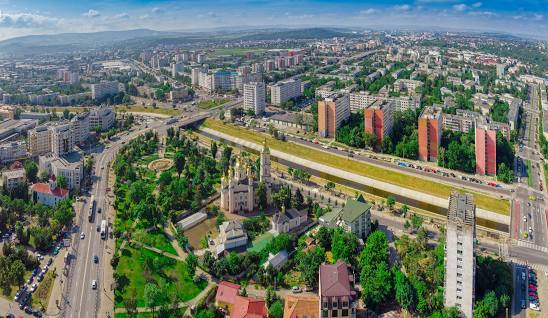
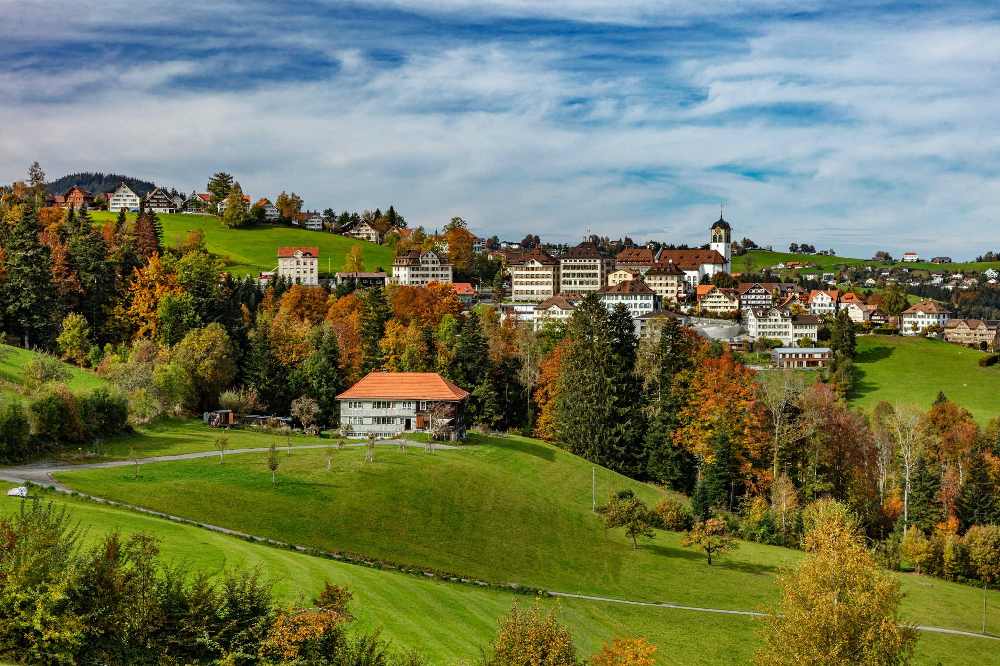
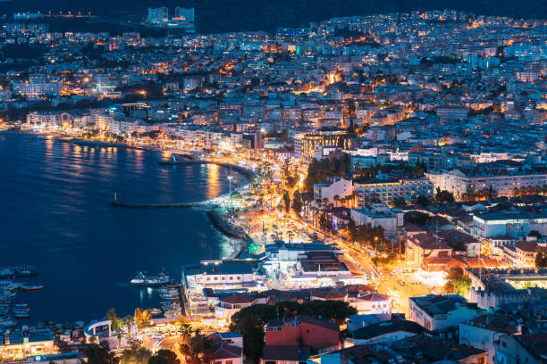

Primary school
I completed my primary education at "Dimitar Vlahov in Štip, where I gained valuable experience through international exchanges and competitions, broadening my horizons and nurturing my competitive spirit.
High school
My high school years at Yahya Kemal College in Skopje were undeniably my most significant and life-changing. The multitude of projects I worked on provided invaluable experience, shaping me holistically in various aspects of life.
Faculty
My experience at the Faculty of Computer Science and Engineering has been incredible. The opportunity to meet exceptional colleagues has been inspiring, and I'm eagerly looking forward to delving deeper into the world of the IT industry.
Projects
Biodegradable packaging
The project focused on developing a biodegradable packaging alternative to plastic, utilizing a combination of egg whites, compost, hay, and mycelium. Completed in just 13 days, the experiment proved successful, with the third method standing out as the most effective. The addition of egg whites as a bonding agent not only enhanced the packaging's strength but also improved its overall properties. Notably, this method required the least preparation time compared to the other two approaches, making it a promising solution for sustainable packaging.
Cleaning dairy wastewater
The project focuses on utilizing citrus peels for the purification of dairy wastewater. The process involves drying and blending the peels into a fine powder. This powder is then used as a filter through which the wastewater passes. As the water flows through the peels, impurities and contaminants are trapped, resulting in purified water that can be reused. By harnessing the natural properties of citrus peels, this innovative approach offers a sustainable and environmentally friendly solution for treating dairy wastewater and conserving water resources.
With these projects, I had the opportunity to participate in multiple international competitions held in Zagreb, Oswego, and Iași.
Iași,Romania
My experience with the Euroinvent competition in Romania was remarkable. I had the privilege of attending twice, once in person and once online, and on both occasions, I won a silver medal. The live event was particularly memorable as it allowed me to witness other inspiring projects and engage in discussions with fellow competitors, gaining valuable insights and perspectives. The opportunity to exchange ideas and learn from others enhanced the overall experience and fueled my passion for innovation.
New York, United States of America
Participating in the Genius Olympiad - Oswego in the USA marked my first trip to the country, and it held tremendous significance for me. Beyond the competition itself, the entire journey was filled with memorable moments. I had the opportunity to explore vibrant New York City and witness the awe-inspiring beauty of Niagara Falls. At the competition, I presented my project on "Cleaning dairy wastewater" and was honored with a well-deserved mention, further validating the hard work and dedication I had put into my research.

International Exchanges
During my primary school years, I had memorable experiences participating in international exchanges, broadening my horizons and fostering cultural understanding.
Switzerland
My experience in Switzerland was truly eye-opening. Through an international exchange program that emphasized cross-cultural differences and critical thinking, I spent two transformative weeks in Trogen during the summer after my 6th grade. The program brought together individuals from various regions in my country, including Gostivar, Bitola, Struga, and Ohrid, along with locals from Trogen. Interacting with people from different backgrounds sparked lively discussions and helped me gain a broader perspective on global issues. The exposure to diverse perspectives and the camaraderie formed during this program left an indelible mark on my journey of personal growth and cultural understanding.
Turkey
My exchange experience in Turkey, specifically in Aydin, during my 4th grade primary schooling, was incredibly enriching. Staying with a local student's family allowed me to immerse myself in their culture and witness their way of living firsthand. The program took place during the international week of children in April and aimed to provide us with an opportunity to showcase our cultural dances and cuisines. The experience proved to be highly beneficial, as it broadened my understanding of different traditions and fostered cross-cultural connections. Overall, it was a truly valuable and meaningful experience that left a lasting impact.
